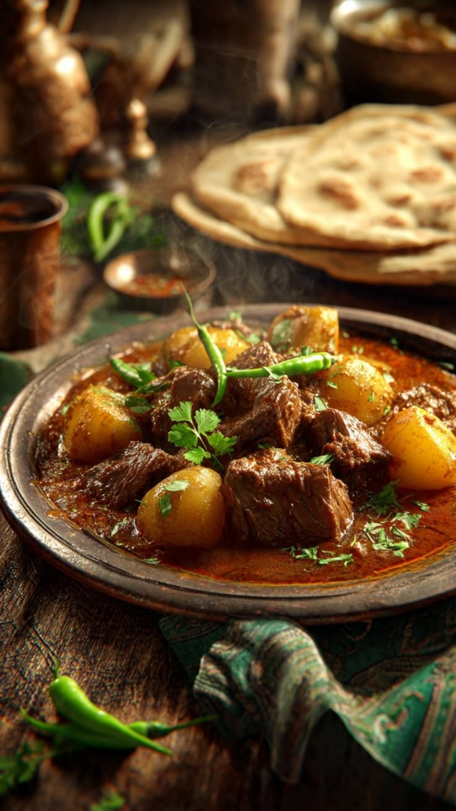

Authentic Pakistani Aloo Gosht
Aloo Gosht is a classic Pakistani comfort food made with tender
mutton, soft potatoes, tomatoes, yogurt and aromatic spices.
This flavorful curry is perfect for family lunches, dinners
and traditional Pakistani gatherings.

Prep Time: 20 minutes
Cook Time: 1 hour 10 minutes
Total Time: 1 hour 30 minutes
Servings: 5
Ingredients
- 1 kg mutton, cut into medium pieces
- 4 medium potatoes, peeled and cut into large pieces
- 3 tablespoons cooking oil
- 2 large onions, thinly sliced
- 2 medium tomatoes, chopped
- 2 tablespoons ginger-garlic paste
- 1 cup plain yogurt
- 2 green chilies, slit
- 1 teaspoon cumin seeds
- 1 teaspoon red chili powder
- 1/2 teaspoon turmeric powder
- 1 teaspoon coriander powder
- 1 teaspoon cumin powder
- 1/2 teaspoon garam masala
- 1 teaspoon salt, or to taste
- 3 cups water, approximately
- Fresh coriander for garnish
How to Make Aloo Gosht
-
Heat oil in a heavy-bottomed pot and fry the sliced onions
until golden brown.
-
Add ginger-garlic paste and cook for about one minute
until fragrant.
-
Add the mutton pieces and cook on medium heat until the
meat changes color and becomes lightly browned.
-
Add chopped tomatoes, yogurt, red chili powder, turmeric,
coriander powder, cumin powder and salt.
-
Cook the mixture until the tomatoes become soft and the
oil begins to separate from the masala.
-
Add water, cover the pot and cook until the mutton becomes
tender and a rich gravy develops.
-
Add the potato pieces and green chilies to the cooked
mutton gravy.
-
Cover and cook until the potatoes are tender and fully cooked.
-
Sprinkle garam masala and fresh coriander over the Aloo Gosht.
-
Simmer for a few more minutes and serve hot with naan,
roti or rice.
Cooking Tips
- Brown the onions properly for a richer curry.
- Cook the mutton until tender before adding the potatoes.
- Do not overcook the potatoes or they may break apart.
- Adjust the water according to your preferred gravy consistency.
- Fresh coriander and green chilies add extra flavor before serving.
How to Serve Aloo Gosht
Serve hot Aloo Gosht with fresh naan, roti, chapati or steamed
basmati rice. A simple salad and yogurt raita also pair beautifully
with this traditional Pakistani curry.
Frequently Asked Questions
Can I use beef instead of mutton?
Yes. Beef can be used instead of mutton, but the cooking time
may be longer depending on the cut of meat.
Can I make Aloo Gosht without yogurt?
Yes. Yogurt can be omitted, although it adds richness and
helps create a smooth and flavorful gravy.
What can I serve with Aloo Gosht?
Aloo Gosht is delicious with naan, roti, chapati or basmati rice.
← Back to Saffron & Spice